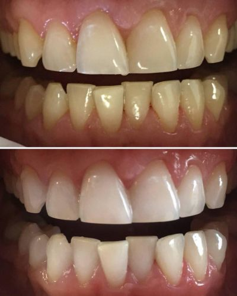
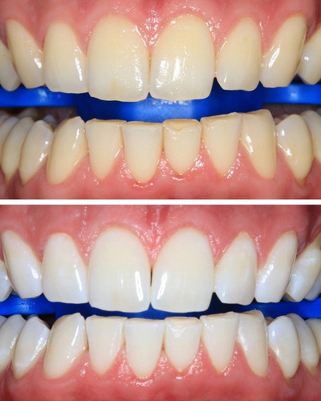
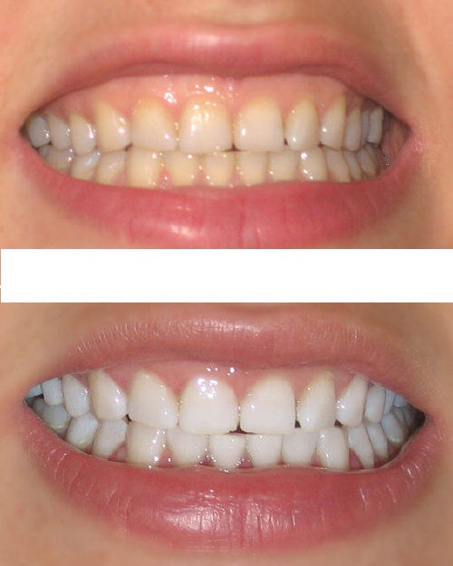
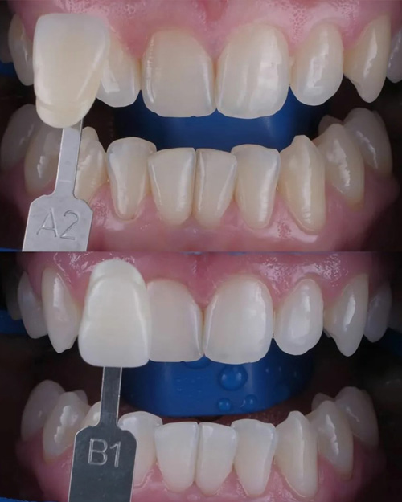
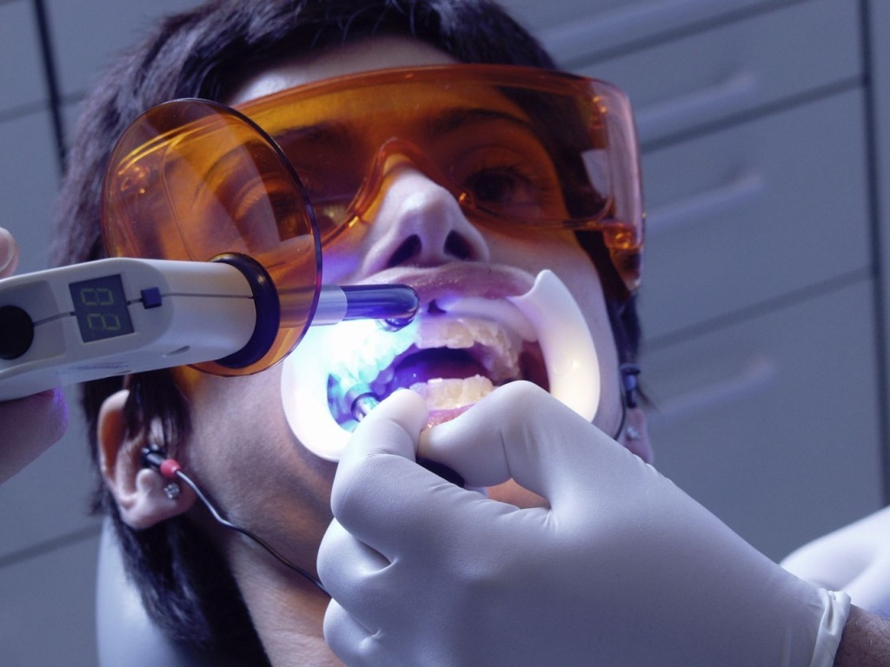
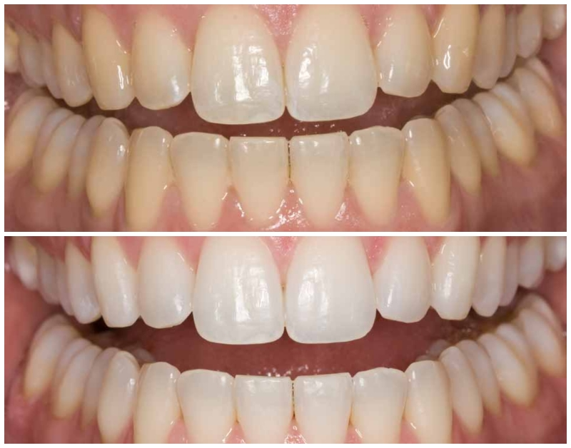

Вы когда-нибудь смотрели в зеркало и чувствовали неловкость из-за цвета своих зубов, потому что они желтые? Многие из нас проходили через то же самое. Так что же делать, чтобы улыбка оставалась привлекательной и белоснежной? Для этого не обязательно обращаться в стоматологическую клинику – зубы можно отбелить дома. Наша редакция пообщалась с ТОП-дантистами и подготовила для вас подборку эффективных советов, которые помогут вашей улыбке засиять.
Каждый хочет, чтобы его зубы были белоснежными и здоровыми. В первую очередь цвет наших зубов зависит от дентина – внутреннего слоя зуба. Также кофе, чай и разнообразные красители находящиеся в пище, курение и алкоголь часто становятся причиной появления пятен, налета, бактерий, а в последствии и кариеса. Луис Арельяно – специалист семейной стоматологии со стажем 15 лет, поделился с нами как отбелить зубы и что делать не нужно.
“Иногда, чтобы отбелить зубы в домашних условиях, люди пользуются содой. Она обладает абразивными свойствами, что означает ее способность удалять пятна, но после использования соды начинает стираться эмаль, вследствие чего зубы начнут темнеть. В результате этого зубы становятся более чувствительные и менее крепкие. Сода так же негативно действует на десна – они начинают кровоточить. Своим пациентам я не рекомендую такое домашнее отбеливание. Если говорить об эффективных профессиональных методах – это лазерная чистка, но она достаточно дорогая. Из домашних я бы выделил Sensenica. Эта не обычные отбеливающие таблетки, а с натуральным составом, который не травмирует эмаль, а действует как лазерное отбеливание. То есть это доступная альтернатива, которую можно использовать дома. При этом она дешевле примерно в 18 раз. Sensenica неоднократно доказала свою эффективность и показала результат не хуже аппаратных процедур, проведенных специалистом в клинике. Ведь даже то, что с теми пациентами, кто отдал предпочтение зубным таблеткам Sensenica, мы встречаемся лишь на плановом ежегодном осмотре, говорит само за себя”.


*Все фото опубликованы с разрешения пациентов
Карлос Кано работает стоматологом уже более 20 лет и знает все об отбеливании и лечении зубов. Подтвердит ли он слова своего коллеги об эффективном домашнем отбеливании?
– Здравствуйте, доктор, скажите, какое отбеливание предпочитают ваши пациенты?
– Здравствуйте. Когда ко мне приходят отбелить зубы, то большинство хотят быстрого и эффективного результата. Плюс ко всему чтобы цена была доступной. В этом случае я рекомендую отбеливающие зубные таблетки Sensenica. Это именно тот случай, когда домашнее отбеливание не уступает по эффективности профессиональному.
– Чем она отличает от других зубных паст и таблеток?
– Обычно производители лукавят насчет отбеливающих свойств стоматологических продуктов, большая их часть в этом смысле не оправдывает ожиданий. Скорее всего, вы сможете избавиться от небольшого потемнения на зубе, но вряд ли измените цвет оскала с желтого на белоснежный: для этого нужна тяжелая артиллерия в виде дантиста с оборудованием или Sensenica. Ее секрет прост – натуральный состав. Именно он эффективно реструктурирует зубную эмаль, кристаллизует и заполняет поры в ней, проникает во внутренний слой зуба (дентин) и бережно оказывает отбеливающий эффект.

– Можете подробнее рассказать об этом средстве?
– Конечно. Поврежденная эмаль с микротрещинами темнеет и тускнеет, потому что свет хуже отражается от ее поверхности. На помощь приходят наночастицы натуральных экстрактов. Они заполняют трещины и отшлифовывают поверхность эмали, делая ее более гладкой, сияющей и белоснежной. Некоторые природные добавки отбеливают не хуже профессиональной перекиси. Они запечатывают трещины на эмали и открытые дентинные канальцы, создавая так называемый барьер. Это предотвращает появление боли и разрушение зуба кариесом в дальнейшем.
– Впечатляет. А какими-то еще свойствами обладает Sensenica?
– С Sensenica ваши зубы будут на 100% защищены от бактерий, перепадов температур и красящих пигментов в пище. Кроме того Sensenica не содержит фтор, SLS, триклозан, хлоргексидин, сахаринат, пероксиды. Также это средство эффективно освежает дыхание. После применения Sensenica у пациентов на 22% улучшилась ситуация с гингивитом (воспаление десен, одна из возможных причин дурного запаха изо рта). Я рекомендую Sensenica всем своим пациентам для домашнего отбеливания и профилактики, после лазерной чистки.


*Все фото опубликованы с разрешения пациентов
– Спасибо большое, что нашли время в своем плотном графике, чтобы рассказать нам об уходе за зубами. У нас остался только последний вопрос: где можно купить отбеливающие таблетки Sensenica??
– Всегда рад поделиться ценной информацией. А купить Sensenica можно только на официальном сайте производителя. Это предотвращает распространение подделок, которые могут только усугубить проблему.
Что мы узнали в итоге?
Sensenica плавно отбеливает ваши зубы, дезинфицирует полость рта, улучшает состояние эмали и слизистых оболочек. Это комплексный подход к уходу за ротовой полостью, который идеально подходит для домашнего использования. Так зачем платить больше?

Для вашего удобства, мы публикуем ссылку на сайт Sensenica, где каждый желающий может оформить доставку до эффективных отбеливающих таблеток. А бонус от нашей редакции – 50% скидки на первый заказ.
Первый раз слышу об отбеливающих таблетках, но стало очень интересно. У меня конечно не такие проблемные зубы, но раз в полгода к стоматологу хожу. Сегодня закажу Sensenica.
Мне мой стоматолог советовал Sensenica. Я сначала не стала заказывать, все-таки она подороже обычной. А месяц назад все-таки заказала. Скажу вам так, она стоит этих денег. Зубы стали белее, ни одного пятнышка. Как будто это виниры. Еще довольна, потому что чувствительной пропала, раньше мучилась регулярно.
Вовремя надо к дантисту ходить и с зубами все будет нормально. А то люди вечно тянут до последнего, а потом ноют, когда уже зубы отваливаются.
Тоже интересуют такие способы отбеливания. Читал в инете, но не уверен, что действует... Хотелось бы подробнее узнать от тех, кто пользовался или видел реальный результат после этих отбеливающих таблеток.
Я один раз попробовала отбелить зубы в профессиональных условиях, кроме того, что, это было очень дорого, и весь метод был основан на использование отбеливающего геля очень высокой концентрации и катализатора. Мои зубы были белыми всего несколько недель. Но десна болели так, что я уже не рада была. В общем никому не советую и перекисью осветлять тоже.
Привет всем. Хочу написать свой отзыв. Результат я заметила после первого применения - пропала ноющая боль в деснах. И приятный запах изо рта продержался аж до обеда, хотя я пила по две чашки кофе. Ну и про осветление тона - до и после это небо и земля. Смотри сами:

Зубы реально стали белее!
Я, конечно, понимаю, что открытие - это полет в космос и на Марс, но на таком же уровне значимости стоят для меня эти таблетки. Рассказываю: я носила брекеты 2 года. Отдала за них много денег, сил и времени и в итоге получила ровные зубки, но… после снятия брекетов я ужаснулась! Эмаль была настолько повреждена и поцарапана и в пятнах, что мне даже было странно почему ничего не болит. Я думала о красивой улыбке уже можно забыть, но Sensenica быстро восстановила состояние зубов и отбелила тон.
Доставили! Заказал сразу на всю семью
У меня от природы очень тонкая эмаль и стоматологическое отбеливание мне запрещено. Поэтому купил Sensenica. Пользовался таблетками строго по инструкции, эффект увидел после нескольких чисток. Спустя месяц зубы стали значительно белее, хоть я и курильщик со стажем.
Оставьте ваш отзыв:
Ваш комментарий на модерации